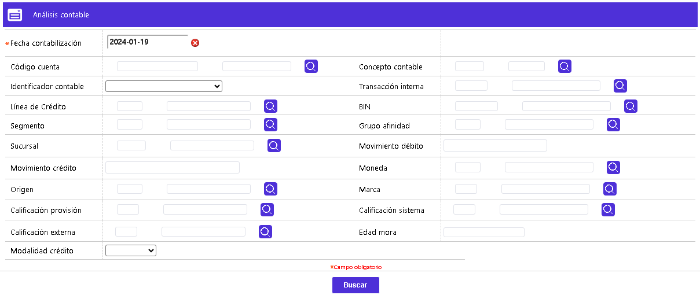
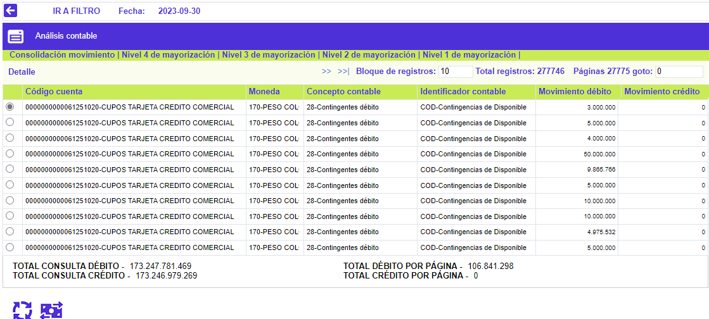
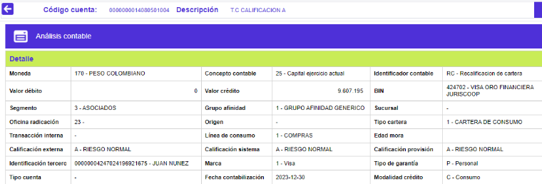
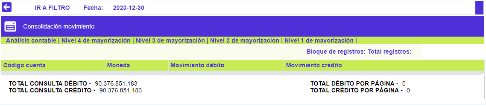
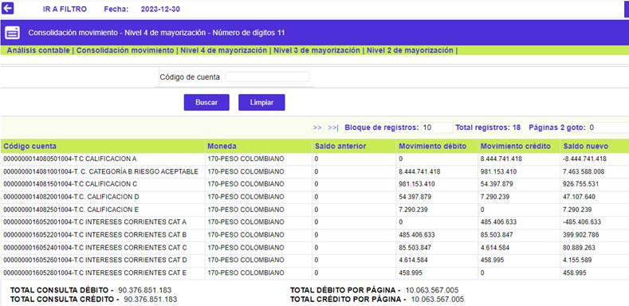

Análisis contable
En este formulario, la entidad puede consultar la información contable generada durante el proceso diario y, la manera como se afectó por los diferentes registros. Debe tenerse en consideración, el momento de ejecución del proceso que agrupa el movimiento contable, para garantizar que la información consultada en este formulario, sea realmente la que corresponda al movimiento procesado.
El formulario contiene cinco enlaces que permiten invocar otros formularios que muestran la Consolidación del movimiento, Nivel de mayorización 4, Nivel de mayorización 3, Nivel de mayorización 2, Nivel de mayorización 1 y Detalle.
Al invocarlo, se muestra en modo consulta o Filtro, y por defecto con la misma fecha de proceso o del sistema en el campo Fecha contabilización. Si el usuario activa el botón Buscar, el sistema realiza la consulta y en un nuevo formulario muestra los datos obtenidos, incluso si a ese momento no se han generado cifras contables, para la Fecha contabilización.
Esta funcionalidad permite consultar la totalidad de las cifras contables del universo de tarjetas de crédito para la Fecha contabilización indicada, para una única tarjeta, dato ingresado en el campo Número tarjeta, o utilizando uno o varios de los campos provistos, en los que se puede digitar el dato o seleccionarlo de la lista de valores adjunta, luego de lo cual basta con activa el botón Buscar.

|
Fecha contabilización |
Campo obligatorio que por defecto muestra la misma fecha de proceso o del sistema, sin embargo, mediante un calendario provisto, permite seleccionar fechas anteriores sobre las que se requiere realizar la consulta de las cifras contables. |

Descripción de campos
|
Código cuenta |
En este campo se muestra el código y nombre de la cuenta afectada contablemente y, a la cual corresponde la información desplegada a su derecha. |
|
Concepto contable |
De acuerdo con el tipo de movimiento, este campo muestra el código y nombre del concepto contable con el cual llegó la información para generar el correspondiente registro a la cuenta. |
|
Identificador contable |
Este campo contiene, de acuerdo con el movimiento ingresado, el código y nombre del identificador contable con el que llegó la información para efectuar los respectivos registros a la cuenta. |
|
Movimiento débito |
Campo que muestra el valor total de los registros de naturaleza débito, aplicados a la combinatoria: cuenta, moneda, concepto contable e identificador, para el día de proceso correspondiente. |
|
Movimiento crédito |
Campo que muestra el valor total de los registros de naturaleza crédito, aplicados a la combinatoria: cuenta, moneda, concepto contable e identificador, para el día de proceso correspondiente. |
|
Total débito por página |
Campo que muestra el monto (sumatoria), de los movimientos de naturaleza débito, correspondientes a los registros que se encuentran desplegados en la página actual, que está consultando el usuario. |
|
Total crédito por página |
Este campo muestra el monto (sumatoria), de los movimientos de naturaleza crédito, correspondientes a los registros que se encuentran desplegados en la página actual, que está consultando el usuario.. |
Si el usuario selecciona un registro e invoca la opción Detalle, se despliega un formulario con la información completa del registro y en el cual ninguno de sus campos es modificable.

Adicional a los primeros campos ya descritos más arriba, a continuación, se detallan los restantes campos, contenidos en el formulario.
|
Bin |
Campo que muestra el código y nombre del Bin al que pertenecen las TC's, con las que se efectuaron las utilizaciones para las que se refleja la información procesada y registrada en esta cuenta contable. |
|
Segmento |
Campo que muestra el código y nombre del Segmento al que pertenecen las TC's, con las que se efectuaron las utilizaciones para las que se refleja la información procesada y registrada en esta cuenta contable. |
|
Grupo de afinidad |
Campo que muestra el código y nombre del Grupo de afinidad al que pertenecen las TC's, con las que se efectuaron las utilizaciones para las que se refleja la información procesada y registrada en esta cuenta contable. |
|
Sucursal |
Campo que muestra el código y nombre de la Sucursal a través de la cual se efectuaron las utilizaciones para las que se refleja la información procesada y registrada en esta cuenta contable. |
|
Oficina de radicación |
Campo que muestra el código y nombre de la Sucursal a la que pertenecen las TC's, con las que se efectuaron las utilizaciones para las que se refleja la información procesada y registrada en esta cuenta contable. |
|
Origen |
Campo que muestra el código y nombre del origen, por medio del cual llegó la información procesada y registrada en la cuenta contable. |
|
Tipo cartera |
Campo que muestra el código y nombre del tipo de cartera asociado a las TC's, con las que se efectuaron las utilizaciones para las que se refleja la información procesada y registrada en esta cuenta contable. |
|
Transacción interna |
Este campo muestra el código y nombre de la transacción interna, con la cual llegó el movimiento para ser registrado en la cuenta contable. |
|
Línea de consumo |
Campo que contiene el código y nombre de la línea de crédito, a la cual pertenece la transacción y, con la cual llegó la información procesada y registrada en la cuenta contable. |
|
Edad mora |
En este campo se muestra la edad de mora de las TC's, con la cual llegó la información procesada y registrada en la cuenta contable. |
|
Calificación externa |
Campo que indica la calificación externa de las TC's, con la cual llegó la información procesada y registrada en la cuenta contable. |
|
Calificación sistema |
En este campo se despliega la calificación del sistema asociada a las TC's, y con la cual llegó la información procesada y registrada en la cuenta contable. |
|
Calificación provisión |
Campo que contiene la calificación para provisión asociada a las TC's, y con la cual llegó la información procesada y registrada en la cuenta contable. |
|
Identificación tercero |
En este campo se muestra la identificación del tercero, número de la TC y nombre plástico, (para efectos de la interfase contable), con el cual llegó la información procesada y registrada en la cuenta contable. |
|
Marca |
Campo en el que se indica la marca a la que pertenecen las TC's, y con la cual llegó la información procesada y registrada en la cuenta contable. |
|
Tipo de garantìa |
En este campo se despliega el tipo de garantìa con el cual llegó la información procesada y registrada en la cuenta contable. |
|
Tipo cuenta |
Campo que muestra, de acuerdo con la información de los establecimientos, el tipo de cuenta con el cual llegó la información procesada y registrada en la cuenta contable. |
|
Fecha contabilización |
Este campo indica en formato YYYY-MM-DD la fecha en la cual se registró la información contable. |
|
Modalidad de crédito |
Muestra de acuerdo con la información procesada y registrada en la cuenta contable, la modalidad de crédito con la cual llegó la información. |
Consolidación movimiento: Si el usuario activa el enlace, se despliega un nuevo formulario que muestra, únicamente, la sumatoria de los valores débito y crédito, permitiendo de un solo vistazo, validar si la contabilidad para ese día de proceso está cuadrada o no.

Nivel '4, 3, 2, 1' de mayorización: Si el usuario invoca cualquiera de esos enlaces, se despliega un nuevo formulario que muestra, de acuerdo con lo definido por la entidad en Parámetros contables, las cuentas contables en sus diferentes niveles o cantidad de dígitos definidos. Los campos desplegados en cualquiera de estos formularios son los mismos, y lo único que cambia es la cantidad de dígitos de la cuenta contable que se muestran al usuario, en el mismo formulario, en otras palabras, a diferentes niveles de consolidación o desagregado.
El formulario contiene un filtro que le permite al usuario consultar dentro de cada nivel de mayorización la información correspondiente a una cuenta determinada.

|
Actualizar datos: Si producto de la verificación de las cifras contables, se detecta, por ejemplo, alguna diferencia causada por una cuenta erróneamente parametrizada o no creada, luego de realizar la actividad o modificación correspondiente, le permite a la entidad, mediante este botón especial, volver a generar las cifras contables, antes de avanzar en la ejecución de los restantes procesos del batch. |
|
|
Cuadrar saldos: Funcionalidad que permite forzar el cuadre de las cifras contables, a pesar de que no se subsanen o erradiquen las causas de las mismas. |